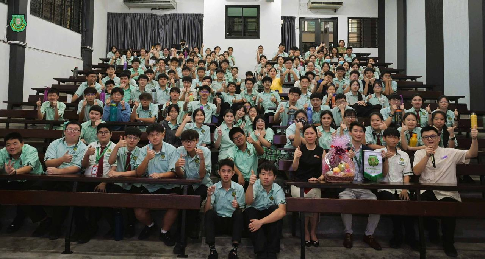
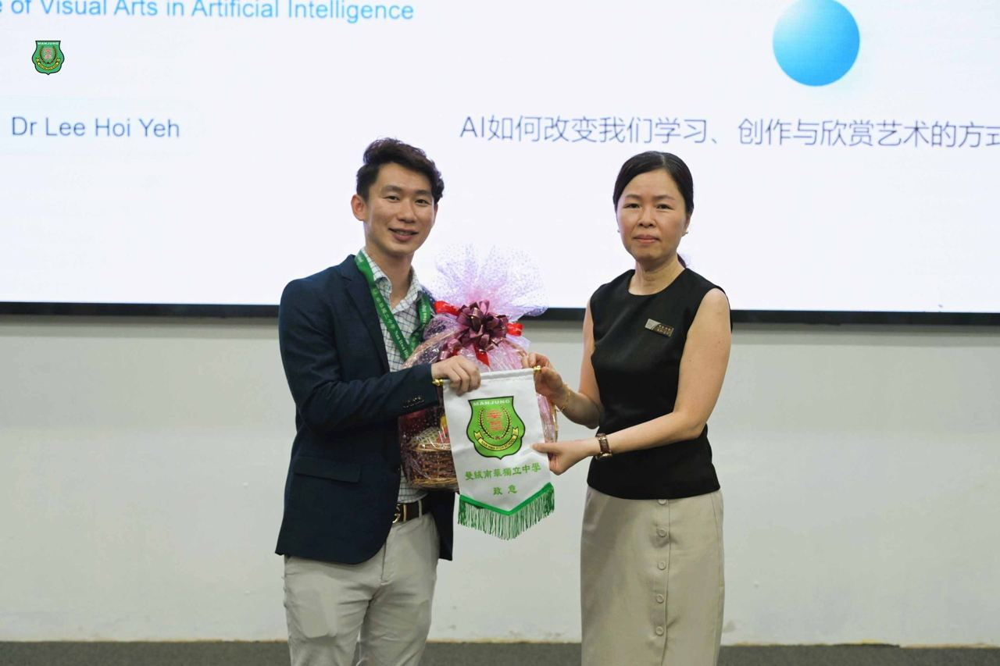
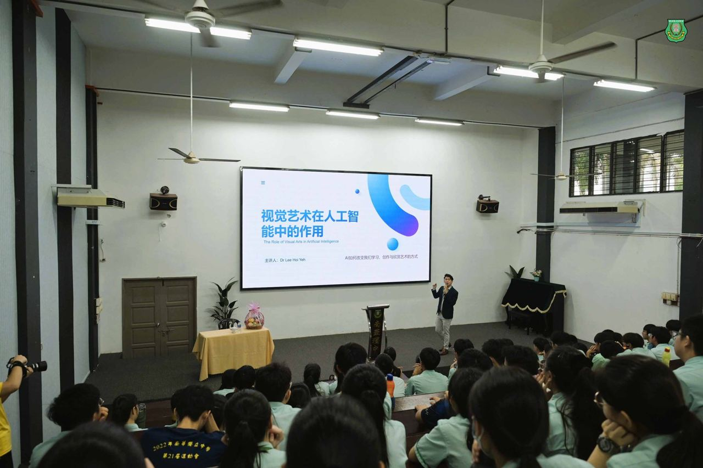
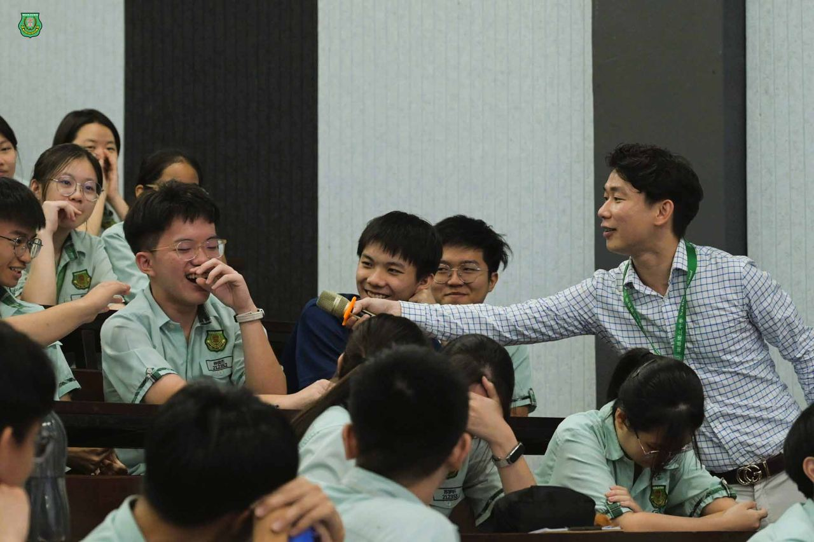
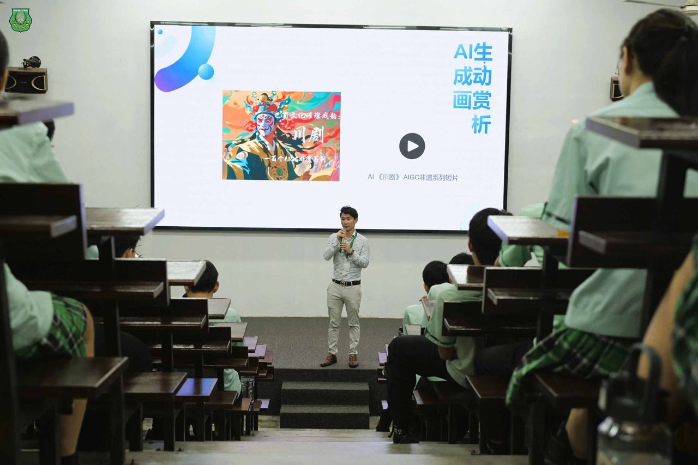
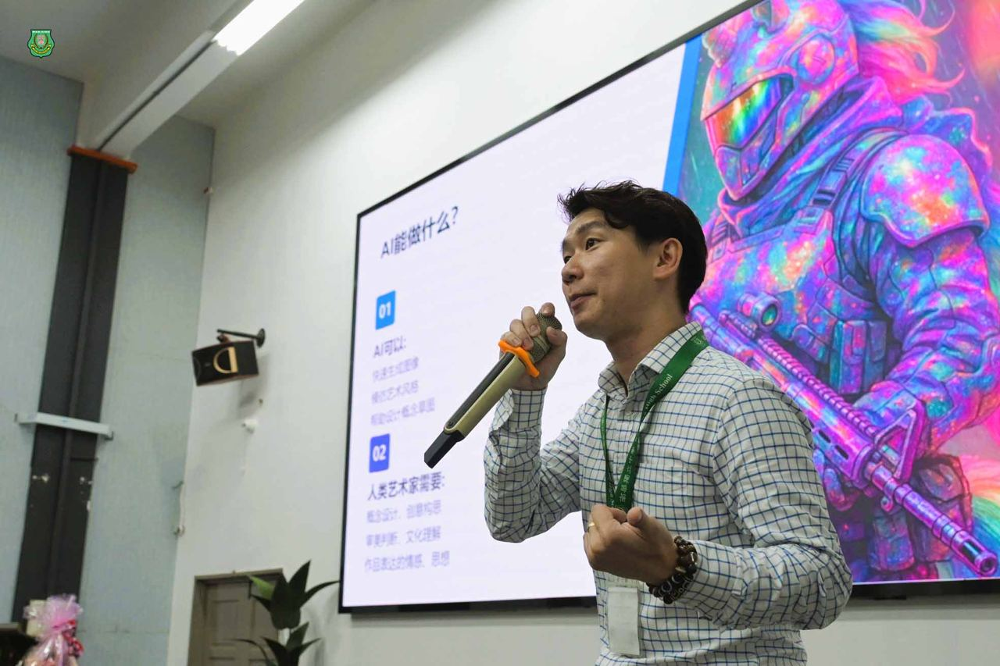
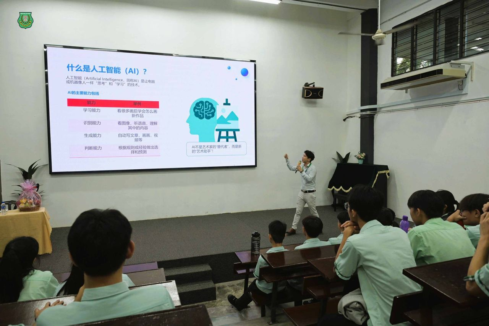
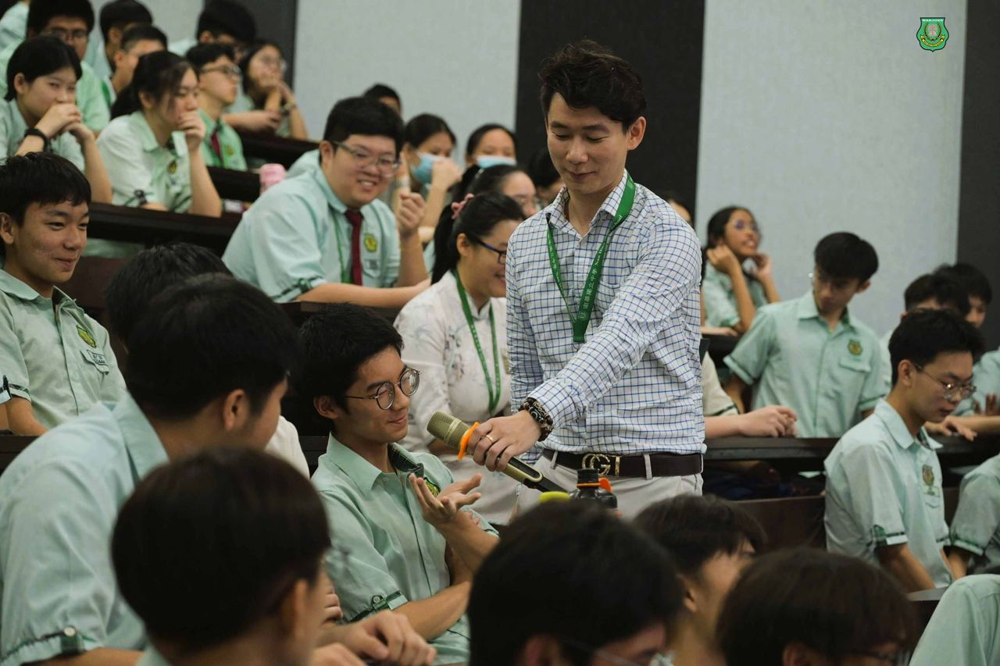

AI时代美育何去何从
AI时代美育何去何从
南华独中办讲座激发学生思考
一场主题为《#美术在AI时代扮演的角色》的专题讲座于日前成功举行，苏丹依德理斯教育大学艺术、可持续性与创意产业学院讲师李辉业博士为主讲人，为师生深入剖析AI技术如何重塑艺术教育的内涵与未来发展方向。
李博士指出，随着AI训练(AI training)与AIGC（人工智能生成内容）系列应用的普及，艺术创作正迎来前所未有的变革。AI不仅是艺术创作的新工具，更在教育、设计与跨领域整合方面展现无限潜力。他强调，美术教育的核心将从“技术训练”转向“#跨领域整合”与“#创意思维”的培养。
讲座中，李博士深入分析了AI在美术教育中的多方面角色，包括：
* 辅助学习美术作品，理解艺术风格与类型；
* 培养判断能力与审美能力；
* 跨学科整合STEAM（科学、技术、工程、艺术、数学）课程；
* 推动学生创意思维与艺术表达。
李博士提出，未来的艺术人才不再局限于传统画家、设计师等角色，还将涌现出AI艺术整合师、跨媒介视觉设计师、艺术科技产品设计师等多元职业新兴岗位。
此外，他也展示了AI在图像生成、logo设计、动画制作、空间效果图、游戏美术等领域的具体应用案例，激发在场师生的浓厚兴趣。
此次讲座不仅拓宽了学生对艺术与科技融合的认识，也为南华独中美术教育的未来发展注入了新思维。学校将继续推动课程创新，为学生打造面向未来的多元学习平台。







